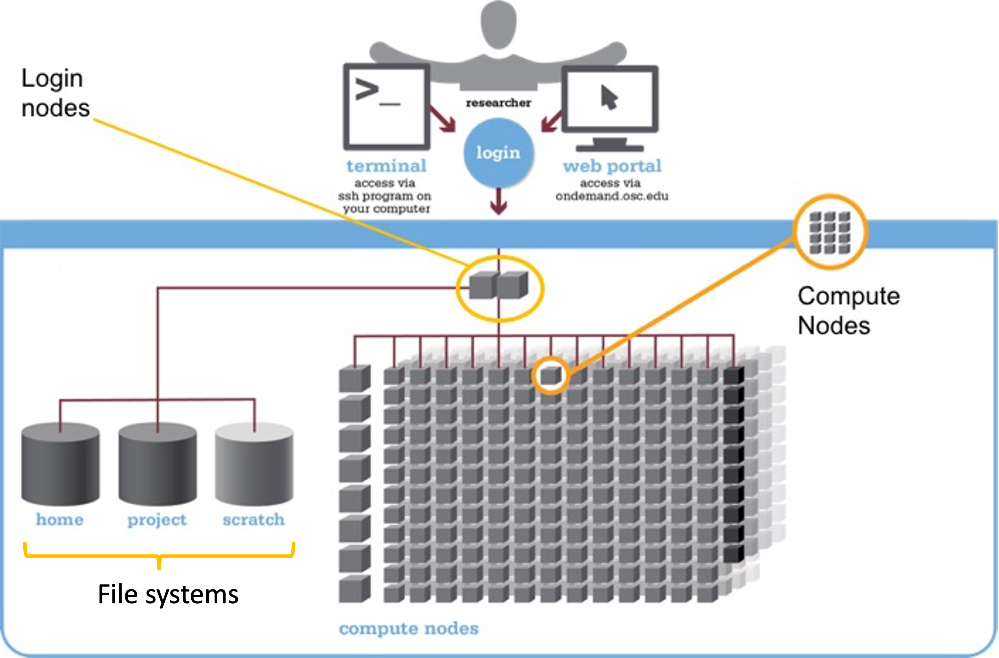

Intro to the Ohio Supercomputer Center (OSC)
Week 1 - Thu lecture
1 Goals for this session
This session will provide an introduction to high-performance computing in general and to the Ohio Supercomputer Center (OSC) more specifically.
This is only meant as a brief overview to give context about the working environment that we will start using next week: we will do all of our coding and computing at OSC during this course. During the course, you’ll learn a lot more about most topics touched on in this page — week 6 and 7 in particular focus on OSC.
2 High-performance computing
A supercomputer (also known as a “compute cluster” or simply a “cluster”) consists of many computers that are connected by a high-speed network, and that can be accessed remotely by its users. In more general terms, supercomputers provide high-performance computing (HPC) resources.
This is what Cardinal, one of the OSC supercomputers, physically looks like:
Here are some possible reasons to use a supercomputer instead of your own laptop or desktop:
- Your analyses take a long time to run, need large numbers of processors, or a large amount of memory.
- You need to run an analysis many times.
- You need to store a lot of data.
- Your analyses require software available only for the Linux operating system, but you have Windows.
- Your analyses require specialized hardware, such as GPUs (Graphical Processing Units).
When you’re working with omics data, many of these reasons typically apply. This can make it hard or sometimes simply impossible to run all your analyses on your personal workstation, and supercomputers provide a solution.
The Ohio Supercomputer Center (OSC)
The Ohio Supercomputer Center (OSC) is a facility provided by the state of Ohio. It has several supercomputers, lots of storage space, and an excellent infrastructure for accessing these resources.
OSC has three main websites — we will mostly or only use the first:
- https://ondemand.osc.edu: A web portal to use OSC resources through your browser (login needed).
- https://my.osc.edu: Account and project management (login needed).
- https://osc.edu: General website with information about the supercomputers, installed software, and usage.
Access to OSC’s computing power and storage space goes through OSC “Projects”:
- A project can be tied to a research project or lab, or be educational like this course’s project,
PAS2880. - Each project has a budget in terms of “compute hours” and storage space1.
- As a user, it’s possible (and common) to be a member of multiple different projects.
3 The structure of a supercomputer center
3.1 Terminology
Let’s start with some (super)computing terminology, going from smaller things to bigger things:
- Node
A single computer that is a part of a supercomputer. - Supercomputer / Cluster
A collection of connected computers. OSC currently has three: “Ascend”, “Cardinal”, and “Pitzer”. - Supercomputer Center
A facility like OSC that has one or more supercomputers.
3.2 Supercomputer components
We can think of a supercomputer as having three main parts:
- File Systems: Where files are stored (these are shared between the OSC supercomputers!)
- Login Nodes: The handful of computers everyone shares after logging in
- Compute Nodes: The many computers you can reserve to run your analyses
We wil briefly discuss these below, and come back to them in more detail later in the course.

File systems
OSC has several distinct file systems:
| File system | Located within “path” | Main purpose |
|---|---|---|
| Project | /fs/ess/ |
Main storage location |
| Scratch | /fs/scratch/ |
Additional, temporary storage |
| Home | /users/ |
General, personal files not tied to research projects or courses |
During the course, we’ll work in the project folder of the course’s OSC Project PAS2880: /fs/ess/PAS2880.
Paths, like those shown in the table above, specify the locations of folders and files on a computer. You will learn more about them in the next few weeks.
Login Nodes
Login nodes are set aside as an initial landing spot for everyone who logs in to a supercomputer. There are only a handful of them on each supercomputer, they are shared among everyone, and they cannot be “reserved”.
As such, login nodes are meant only to do things like organizing your files and creating scripts for compute jobs, and are not meant for any serious computing, which should be done on the compute nodes.
Compute Nodes
Data processing and analysis is done on compute nodes. You can only use compute nodes after putting in a request for resources (a “job”). The Slurm job scheduler, which we will learn to use later in this course, will then assign resources to your request.
Compared to command-line computing on a laptop or desktop, a number of aspects are different when working on a supercomputer like at OSC. We’ll learn much more about these later on in the course, but here is an overview:
- “Non-interactive” computing is common
It is common to write and “submit” scripts to a queue instead of running programs interactively. - Software
You generally can’t install “the regular way”, and a lot of installed software needs to be “loaded”. - Operating system
Supercomputers run on the Linux operating system. - Login versus compute nodes
As mentioned, the nodes you end up on after logging in are not meant for heavy computing and you have to request access to “compute nodes” to run most analyses.
4 OSC OnDemand
The OSC OnDemand web portal allows you to use a web browser to access OSC resources such as:
- A file browser where you can also create and rename folders and files, etc.
- A Unix shell
- “Interactive Apps”: programs such as RStudio and VS Code
Go to https://ondemand.osc.edu and log in (use the boxes on the left-hand side).
Once logged in, you should see a landing page similar to the one below:
We will now go through some of the dropdown menus in the blue bar along the top.
4.1 Files menu
Hovering over the Files dropdown menu gives a list of directories that you have access to. If your account is brand new, and you were added to PAS2880, you should only have three directories listed:
- A Home directory (starts with
/users/) - The
PAS2880project’s “project” directory (/fs/ess/PAS2880) - The
PAS2880project’s “scratch” directory (/fs/scratch/PAS2880)
You will only ever have one Home directory at OSC, but for every additional project you are a member of, you should usually see additional /fs/ess and /fs/scratch directories appear.
Click on our focal directory /fs/ess/PAS2880.
Once there, you should see whichever directories and files are present at the selected location, and you can click on the directories to explore the contents further:

This interface is much like the file browser on your own computer, so you can also create, delete, move and copy files and folders, and even upload (from your computer to OSC) and download (from OSC your computer) files2 — see the buttons across the top.